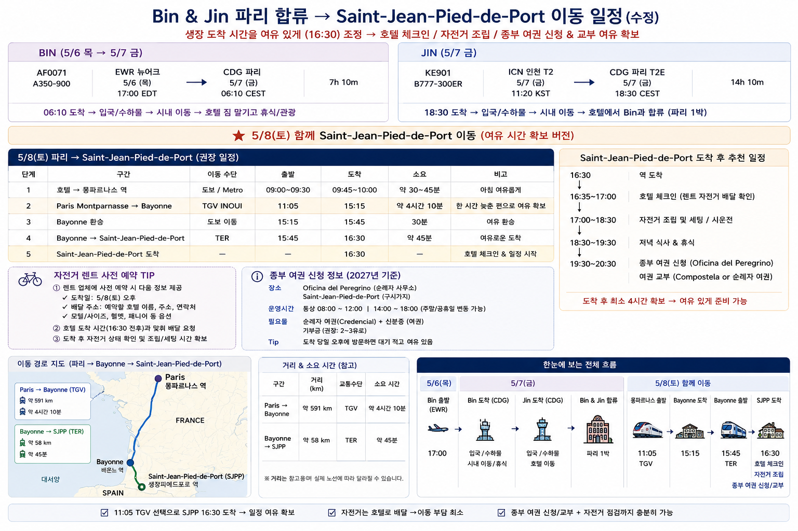
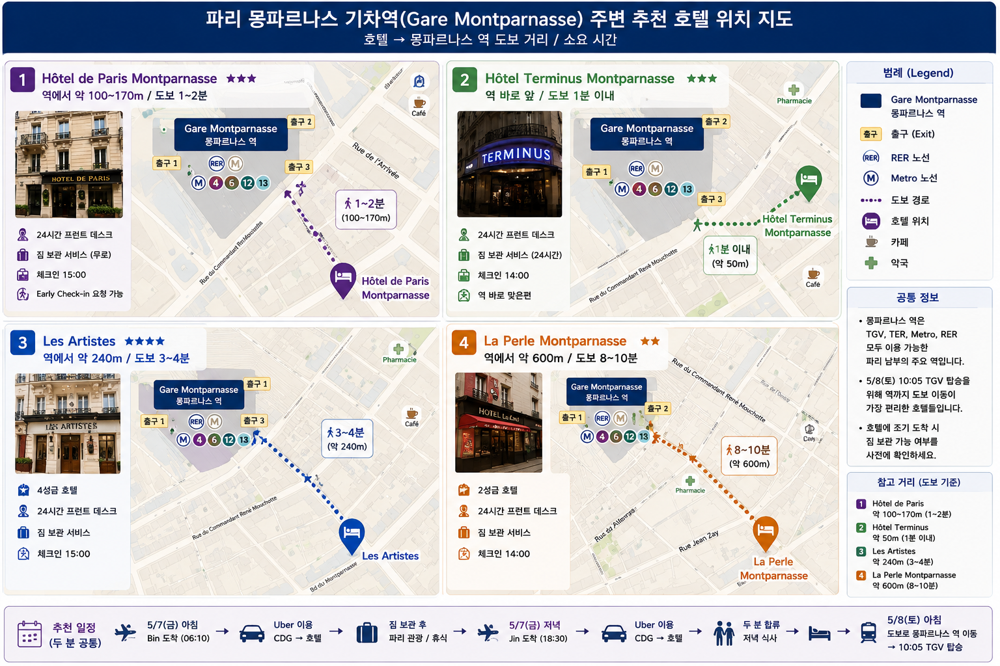
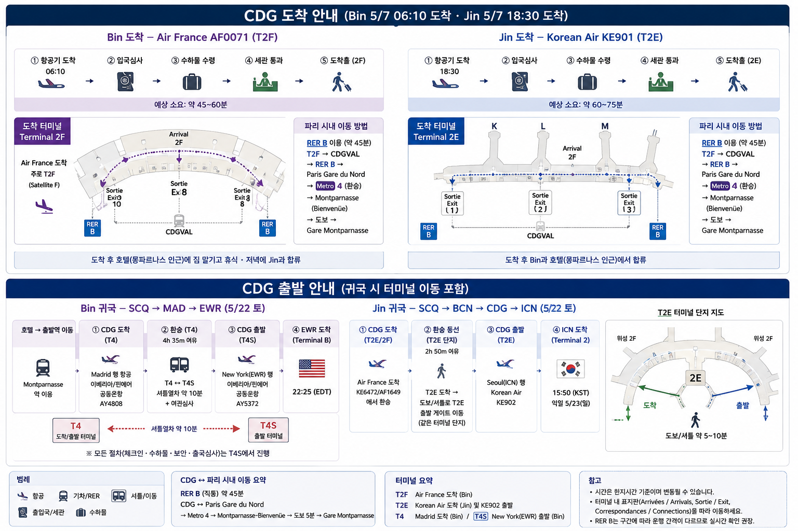
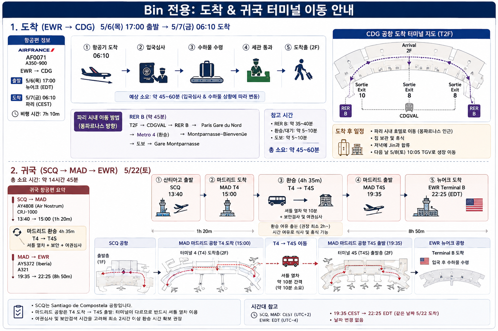
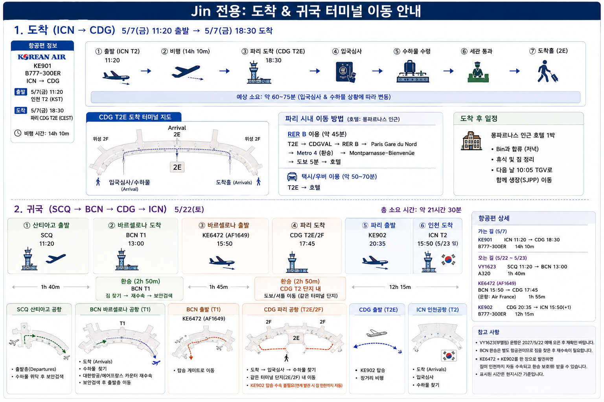
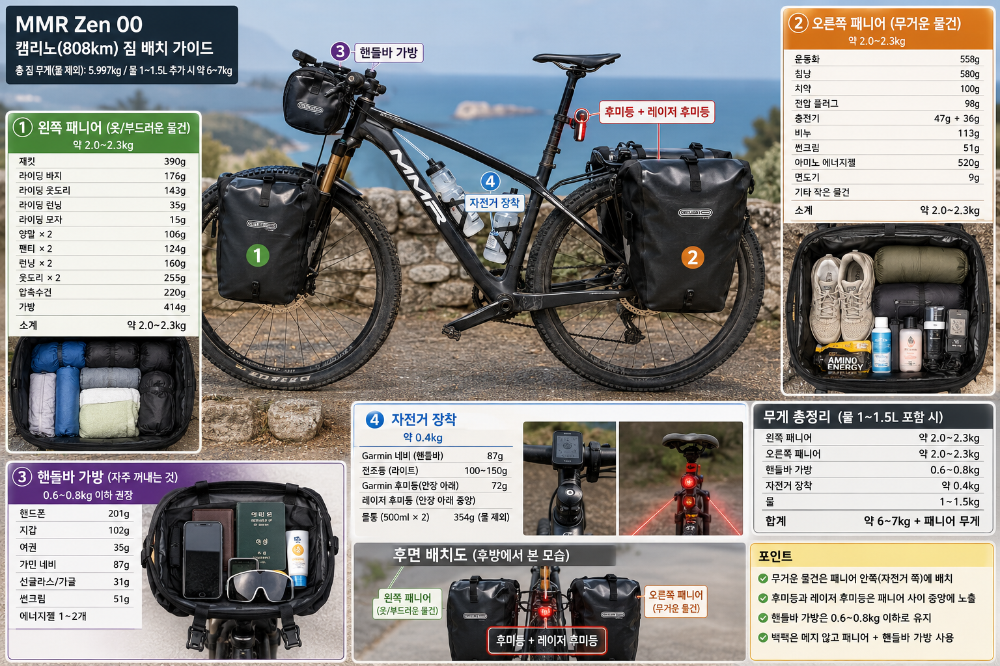
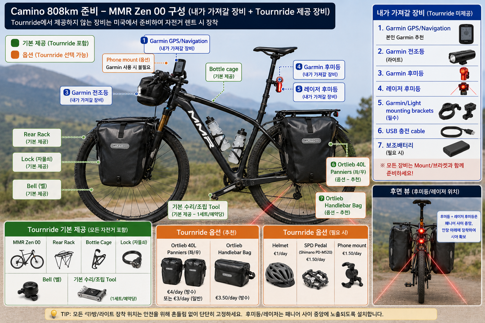

Bin(미국 Newark 출발)과 Jin(한국 인천 출발)이
5월 7일 파리에서 만나 5월 8일 기차로 생장에 들어가, 12일 라이딩 + 레온 휴식 1일로
산티아고 대성당까지 완주하는 자전거 순례 일정입니다.
808.5 km총 주행 거리
12 + 1일라이딩 12일 · 휴식 1일 (5/9–5/21)
67 km일평균 주행
96.5 km최장 구간 (5일차)
8,500 m총 획득고도
전체 루트 · 일정 도표 · 고도 프로파일 종합 지도
Ⅰ · Perfil
고도 프로필
획득고도 기준 세 고비는 1일차 피레네 +1,350m, 10일차 크루스 데 페로 +1,050m,
11일차 오 세브레이로 +1,250m입니다. 총 누적 상승 약 8,500m.
Ⅱ · Etapas
13일 일정 한눈에
1일차 = 5/9(일) ~ 13일차 = 5/21(금) 완주. 8일차(5/16)는 레온에서 쉬는 날입니다.
좁은 화면에서는 표를 옆으로 밀어서 보세요.
일차
날짜
구간
거리
획득고도
누적 km
1
5/9일
생장 (Saint-Jean-Pied-de-Port) → 수비리 (Zubiri)
48.0 km
+1,350 m
48.0
2
5/10월
수비리 (Zubiri) → 에스떼야 (Estella)
65.9 km
+800 m
113.9
3
5/11화
에스떼야 (Estella) → 나베레테 (Navarrete)
61.3 km
+700 m
175.2
4
5/12수
나베레테 (Navarrete) → 벨로라도 (Belorado)
59.3 km
+850 m
234.5
5
5/13목
벨로라도 (Belorado) → 키스트로헤리스 (Castrojeriz)
96.5 km
+350 m
331.0
6
5/14금
키스트로헤리스 (Castrojeriz) → 사아군 (Sahagún)
83.5 km
+450 m
414.5
7
5/15토
사아군 (Sahagún) → 레온 (León)
68.0 km
+250 m
482.5
8
5/16일
🛌 레온 (León) 휴식일 — 자전거 주행 없음
0 km
—
482.5
9
5/17월
레온 (León) → 라바날 델 까미노 (Rabanal del Camino)
74.0 km
+250 m
556.5
10
5/18화
라바날 델 까미노 (Rabanal del Camino) → 베가 데 발까르세 (Vega de Valcarce)
75.5 km
+1,050 m
632.0
11
5/19수
베가 데 발까르세 (Vega de Valcarce) → 사리아 (Sarria)
60.0 km
+1,250 m
692.0
12
5/20목
사리아 (Sarria) → 아르수아 (Arzúa)
76.5 km
+900 m
768.5
13
5/21금
아르수아 (Arzúa) → 산티아고 대성당 (Santiago de Compostela)
40.0 km
+300 m
808.5
Ⅲ · Día a Día
날짜별 상세 카드
각 카드의 QR 코드를 휴대폰 카메라로 스캔하거나 버튼을 누르면
해당 구간의 구글 지도 자전거 길찾기가 바로 열립니다.
※ 구글 자전거 경로는 일부 비포장 카미노 구간을 인근 도로로 우회할 수 있습니다.
자전거 내비게이션 (GPX) — 가민 등 GPS 기기에 넣는 파일입니다. 트랙에 고도가 들어 있고, 순례자 알베르게가 경로 순서대로 웨이포인트로 붙어 있습니다(전체 442곳). 짐 실은 자전거로 내려가기 어려운 급경사 18곳이 있는 5일치는 포장도로 우회로로 갈아 끼웠습니다 (DAY 1 · 2 · 10 · 11 · 12, 우회 표시).트랙 출처 santiago.nl 도보 노선 · 고도 Copernicus EU-DEM · 알베르게 santiago.nl 시설 자료 · 2026-08-21 생성. GPX 에는 노면 정보가 없습니다 — 우회로는 경사 기준으로만 골랐고 자갈·포장 여부를 확인한 것이 아닙니다. 재배포 시 출처 표기와 원 자료 라이선스 확인이 필요합니다.
날짜별 카드를 불러오는 중… camino-days.html
Credencial
디지털 순례자 여권
종이 크레덴시알에 받은 도장(세요 · sello)을 사진으로 남겨 두는 곳입니다.
여권 페이지를 통째로 찍어 올리면 도장 하나하나를 잘라 보여줍니다 —
원본 사진은 그대로 두고 화면에서만 잘라 쓰므로 사진 편집이 필요 없습니다.
각 세요를 누르면 장소 · 날짜 · 시각 · GPS 위치를 볼 수 있고,
같은 내용이 위의 날짜별 카드에도 그날의 세요로 함께 표시됩니다.
Ⅳ · Tren
파리 합류 → 생장피에드포르 (5/6~5/8)
Bin은 5/7 아침, Jin은 같은 날 저녁 파리에 도착해 몽파르나스 인근 호텔에서 합류합니다.
다음 날 5/8(토) 아침 함께 TGV로 Bayonne까지, TER로 갈아타 생장에 도착합니다.
자전거는 생장에서 렌트하므로 파리에서 자전거를 옮길 필요가 없습니다.
항공편 상세는 Ⅴ 항공 · 환승에 있습니다.

5/6 뉴어크 출발부터 5/8 생장 도착까지 — 두 사람의 동선구간별 상세
구간별 위치와 거리
CDG 공항 → 파리 몽파르나스약 30 km · 직선 25 kmUber로 문 앞까지 — Bin 아침 45~75분 · Jin 저녁 50~90분.
RER B는 Gare du Nord 환승이 필요해 큰 가방으로는 불편합니다.
파리 몽파르나스 → Bayonne철도 약 768 km · 직선 662 km
TGV INOUI · 약 4시간. 파리–보르도는 LGV 고속선(583 km),
보르도–Bayonne는 일반선으로 속도가 느려집니다.
Bayonne → Saint-Jean-Pied-de-Port철도 52 km · 직선 42 km
TER · 1시간 1분. 니브 강 계곡을 거슬러 오르는 단선 지선이며
생장이 종착역입니다.
CDG에서 생장까지 철도만 약 850 km ·
이동에 쓰는 시간은 이틀에 걸쳐 약 6시간 30분입니다.
5/6목
BIN17:00 뉴어크 EWR 출발 AF0071 · A350-900
5/7금파리 합류 · 1박
BIN06:10 파리 CDG 도착 비행 7시간 10분
BIN입국 · 수하물 · 세관 → Uber로 호텔 이동 → 짐 보관 → 휴식 또는 관광
이동 45~75분 · CDG에서 12시간 기다리는 것보다 시내로 먼저 들어가는 편이 낫습니다
JIN11:20 인천 T2 출발 KE901 · B777-300ER
JIN18:30 파리 CDG T2E 도착 비행 14시간 10분
JIN입국 · 수하물 · 세관 → Uber로 호텔 이동
저녁 정체를 감안해 50~90분
저녁 몽파르나스 인근 호텔에서 합류
짐 정리 · 호텔에서 역까지 가는 길 확인 · 다음 날 표 확인
5/8토파리 → 생장
08:30~09:00 호텔 출발 → 도보 5~10분 → Gare Montparnasse
09:15 이전 도착 권장 · 지하철을 다시 탈 필요가 없습니다
10:05 Paris Montparnasse 출발 TGV INOUI · 약 4시간
14:05 Bayonne 도착 → 전광판에서 생장행 TER 승강장 확인 환승 20분
14:25 Bayonne 출발 TER · 약 1시간 1분
15:26 Saint-Jean-Pied-de-Port 도착
호텔 체크인 → 미리 배달된 렌트 자전거 확인·세팅 → 크레덴시알 수령 → Day 1 준비
기차 총 이동 5시간 21분 · 파리 출발부터 생장까지 문 앞에서 문 앞까지 약 7시간
CDG → 몽파르나스 호텔 이동
두 사람 모두 Uber로 문 앞까지 이동합니다.
RER·지하철보다 비싸지만, 장거리 비행 뒤에 큰 가방을 들고 환승하지 않아도 됩니다.
Uber를 고른 이유
무거운 가방을 들고 환승할 필요가 없음
Gare du Nord와 지하철에서 소매치기 걱정이 적음
공항에서 호텔까지 한 번에 (Door to Door)
장거리 비행 직후 이동이 편함
복잡한 파리 대중교통 환승을 피할 수 있음
BIN 5/7 아침
06:10 CDG 도착 → 입국심사 → 수하물 → 세관 →
Uber 호출 → 몽파르나스 인근 호텔 → 짐 보관 → 휴식 · 파리 관광
이동 45~75분 아침 시간대
체크인 시각보다 한참 이르므로, 호텔에
얼리 체크인 가능 여부 또는 무료 짐 보관을 미리 확인하세요.
JIN 5/7 저녁
18:30 CDG T2E 도착 → 입국심사 → 수하물 → 세관 →
Uber 호출 → 몽파르나스 인근 호텔 → Bin과 합류 → 저녁 식사
이동 50~90분 저녁 정체 감안
늦게 도착하므로 호텔에 늦은 체크인이 가능한지 확인해 두세요.
사람
CDG 도착
호텔까지
BIN
5/7 06:10
Uber → 몽파르나스 호텔
JIN
5/7 18:30
Uber → 몽파르나스 호텔
5/8 아침 · 두 사람
호텔 → 도보 → Gare Montparnasse
호텔은 Gare Montparnasse 도보 5~10분 이내로 잡으세요.
그러면 파리에서 지하철을 한 번도 타지 않고 움직일 수 있고,
5/8 아침에도 걸어서 역까지 가 10:05 TGV를 여유 있게 탈 수 있습니다.
몽파르나스 호텔 후보
모두 Gare Montparnasse 도보권입니다.
Bin은 아침 일찍, Jin은 밤늦게 도착하므로 프런트 운영 시간과 짐 보관이 가격보다 중요합니다.

Gare Montparnasse 주변 후보 네 곳 — 눌러서 크게 볼 수 있습니다
1
Hôtel de Paris Montparnasse추천
Montparnasse역에서 약 100~170 m
24시간 프런트
도착일 짐 보관
얼리 체크인 요청 가능
가장 추천
2
Hôtel Terminus Montparnasse
Montparnasse역에서 역 바로 앞
24시간 운영
24시간 짐 보관
체크인 14:00
매우 편리
3
Les Artistes
Montparnasse역에서 약 240 m
4성급
평점이 좋은 편
역과 매우 가까움
조금 더 좋은 숙소
4
La Perle Montparnasse
Montparnasse역에서 약 600 m
2성급
실속형
비용 절약형
예약할 때 확인할 것
BIN 5/7 오전 8~9시경 도착 — 얼리 체크인 가능 여부,
안 되면 무료 짐 보관이 되는지
JIN 5/7 20~21시경 체크인 — 늦은 체크인이 가능한지
(프런트 24시간 운영이면 안심)
두 사람이 따로 도착하므로, 먼저 온 사람 이름으로 예약해 두고
늦게 오는 사람의 이름도 함께 등록해 두세요
역까지 실제 도보 경로 확인 — 몽파르나스역은 크기 때문에
출입구에 따라 5분이 10분이 됩니다. TGV 승강장은 주로 대합실 위층입니다
성급·거리·정책은 바뀔 수 있으니 예약 화면에서 다시 확인하세요.
2027년 5월은 아직 요금이 뜨지 않는 곳도 있습니다.
5/8은 관광하는 날이 아니라 다음 날 출발을 준비하는 날입니다.
15:26에 도착하니 오후에 쓸 수 있는 시간이 서너 시간뿐입니다.
15:26 생장 역 도착 → 호텔 이동 역에서 마을 중심까지 도보권입니다
16:00 전후 호텔 체크인 · 미리 배달된 자전거 확인
자전거 점검 사이즈 · 안장 높이 · 브레이크 · 변속 · 타이어 공기압 · 페달
패니어 장착 후 짧은 시운전 짐을 실은 상태의 무게중심을 미리 느껴 두세요
순례자 사무소에서 크레덴시알 신청·수령 늦지 않게, 자전거 점검 직후에
저녁 식사 → Day 1 준비 GPX 확인 · 가민 충전 · 물과 간식
자전거는 미리 예약하고 호텔로 받기
왜 현장 대여가 아니라 사전 예약인가
현장에서 시작하면
렌트점 찾기 → 계약 → 차량 선택 → 사이즈 조절 → 장비 확인 → 호텔 이동
오후 시간이 대부분 사라집니다
호텔로 미리 받으면
도착 → 체크인 → 바로 점검·세팅
크레덴시알과 저녁 준비까지 여유가 생깁니다
예약할 때 업체에 알려줄 것
이름 (2인)
렌트 시작일 5/8 · 카미노 출발일 5/9
자전거 종류와 사이즈 · 키 · (요청 시) 몸무게
페달 종류 클릿 사용 여부
헬멧 · 패니어 · 수리킷 · 자물쇠 필요 여부
생장 호텔 이름 · 주소 · 전화번호
예상 호텔 도착시간 15:30 전후
호텔 배달 가능 여부
렌트 업체에 보낼 문장
We will arrive in Saint-Jean-Pied-de-Port at approximately 3:30 PM on May 8.
We will start our Camino bicycle trip on the morning of May 9.
Could you deliver our rental bicycles to our hotel in Saint-Jean-Pied-de-Port
before we arrive? We would like to check and adjust the bicycles at the hotel
on the afternoon of May 8.
호텔에 보낼 문장
We have rental bicycles being delivered to the hotel before our arrival
on May 8. Could you please receive and store the bicycles for us
until we check in?
양쪽 모두에게 확인을 받아 두세요.
업체가 배달하겠다고 해도 호텔이 보관을 거절하면 소용이 없습니다.
두 곳의 답장을 휴대폰에 저장해 두면 현장에서 이야기가 빨라집니다.
5/8 저녁 최종 점검
자전거
렌트 자전거 2대 수령
사이즈 · 안장 높이
브레이크 · 변속
타이어 공기압
패니어 장착
가민 거치 · 충전
서류 · 소지품
크레덴시알
여권
현금 · 카드
휴대전화 · 보조배터리
정비 · 보급
수리킷 · 예비 튜브
펌프
물통
간식
내일 준비
DAY 1 GPX 확인
날씨 확인
출발 시각 정하기
확인해 둘 것
5/8은 토요일 — TER 편수가 줄어듭니다
Bayonne ↔ 생장 구간은 평일 6왕복이지만 주말에는 5왕복입니다.
평일 시간표를 보고 계획을 세우면 실제 토요일에는 그 열차가 없을 수 있습니다.
예매할 때 반드시 2027-05-08 토요일 날짜로 조회하세요.
한 번에 묶어 예매하세요
파리→Bayonne와 Bayonne→생장을 하나의 여정으로 예매하면 TGV가 늦어도 다음 TER 연결이 보장됩니다.
따로 사면 지연 시 보상이 없습니다. 예매 오픈은 대체로 출발 3~6개월 전입니다.
Bayonne 환승 20분
Bayonne는 작은 역이라 20분이면 충분하지만, 생장행 TER은 별도 승강장을 쓰는 경우가 있습니다.
도착 직후 전광판에서 Saint-Jean-Pied-de-Port 행 승강장부터 확인하세요.
TER은 단량 디젤 차량입니다
52km 단선 비전철 구간을 X 73500 한 량짜리 열차가 다닙니다.
좌석이 적고 순례철(5월)에는 배낭을 멘 순례자로 붐빕니다. 좌석 지정이 없으니 일찍 승강장에 서세요.
운휴 · 대체버스 가능성
이 노선은 산사태로 운휴된 적이 있고, 그럴 때는 Cambo-les-Bains 이후 구간을 버스로 대체합니다.
출발 전날 SNCF에서 운행 여부를 한 번 더 확인하세요. 대체버스면 소요시간이 늘어납니다.
호텔은 몽파르나스 도보권으로
5/8 아침 이동이 훨씬 편해집니다. Jin이 저녁 늦게 도착하므로
늦은 체크인이 가능한 곳인지도 미리 확인하세요.
시간표는 예시이며 2027년 5월 실제 시각은 예매 오픈 후 확정됩니다.
생장 역은 종착역이라 내리면 바로 마을이고, 순례자 사무소까지 도보 10분 안쪽입니다.
Ⅴ · Tránsito
항공 · 환승 상세 일정
모든 시각은 현지시간입니다 (EDT 뉴어크 · CEST 유럽 · KST 한국).
완주 5/21(금) → 산티아고 1박 → 5/22(토) 귀국 기준이며,
아래 모든 편의 시간대 계산을 검증했습니다 — 결과는 맨 아래 ✔ 박스 참고.

5/7 CDG 도착 — 두 사람 모두 이 흐름을 거칩니다. Bin 06:10 도착(AF · T2E 계열) · Jin 18:30 도착(KE901 · T2E). 입국심사 → 수하물 → 세관 → Uber로 몽파르나스 호텔까지 문 앞 이동
가는 길BIN5/6 목 → 5/7 금
편명 · 기종
출발
도착
소요
AF0071 에어프랑스 A350-900
EWR 뉴어크 5/6 목 17:00 EDT
CDG 파리 5/7 금 06:10 CEST
7h 10m
Bin은 새벽 6시 도착 — 시내로 이동해 호텔에 짐 맡기고 쉬다가,
저녁에 Jin과 호텔에서 합류하는 편이 CDG에서 12시간 기다리는 것보다 낫습니다.
가는 길JIN5/7 금
편명 · 기종
출발
도착
소요
KE901 대한항공 B777-300ER
ICN 인천 T2 5/7 금 11:20 KST
CDG 파리 T2E 5/7 금 18:30 CEST
14h 10m
18:30 도착 → 몽파르나스 인근 호텔에서 Bin과 합류, 파리 1박.
다음 날 5/8(토) 10:05 몽파르나스發 TGV로 함께 생장 이동 (섹션 Ⅳ 참고).

BIN — 가는 길 EWR → CDG · 귀국 SCQ → MAD(T4 → T4S 환승) → EWR. 마드리드 T4에서 T4S 로는 셔틀 열차로 이동하며 출국심사가 그 사이에 있습니다
귀국BIN5/22 토 · SCQ → MAD → EWR · 총 14h 45m
편명 · 기종
출발
도착
소요
AY4808 핀에어 공동운항 운항: Air Nostrum(이베리아) · CRJ-1000
SCQ 산티아고 5/22 토 13:40 CEST
MAD 마드리드 T4 5/22 토 15:00 CEST
1h 20m
🔁 마드리드 환승 4h 35m — T4 → T4S (셔틀 열차 이동 + 여권심사) · 여유 충분
AY5372 핀에어 공동운항 운항: 이베리아 · A321
MAD 마드리드 T4S 5/22 토 19:35 CEST
EWR 뉴어크 T B 5/22 토 22:25 EDT
8h 50m
귀국 경로 지도 5/22 토 · Bin 서쪽 · Jin 동쪽
BIN SCQ→MAD→EWR (서쪽) · 총 14h45JIN SCQ→BCN→CDG→ICN (동쪽) · 총 21h30
지리는 근사치 — 두 사람이 산티아고 공항에서 각자 출발(Jin 11:20 · Bin 13:40)해
반대 방향으로 지구를 돕니다. 장거리 구간(뉴어크行·인천行)은 방향 화살표로만 표시했습니다.
귀국JIN5/22 토 · SCQ → BCN → CDG → ICN · 총 21h 30m
편명 · 기종
출발
도착
소요
VY1623 부엘링 A320 · ⚠ 2027/5/22 운항 여부 예매 오픈 시 확인
SCQ 산티아고 5/22 토 11:20 CEST
BCN 바르셀로나 T1 5/22 토 13:00 CEST
1h 40m
🔁 바르셀로나 환승 2h 50m — T1 · 부엘링이 별도 발권이면 짐 찾아 대한항공/에어프랑스 카운터 재수속 — 여유 충분
KE6472 대한항공 공동운항 운항: 에어프랑스 AF1649 · ✅ 운항 패턴 확인
BCN 바르셀로나 5/22 토 15:50 CEST
CDG 파리 T2E/2F 5/22 토 17:45 CEST
1h 55m
🔁 파리 환승 2h 50m — 에어프랑스 허브 T2 도착 → KE902 T2E 출발 · 같은 터미널 단지라 이동 짧음 · KE6472+KE902 대한항공 통합 발권이면 짐 인천까지 자동 수속
KE902 대한항공 B777-300ER · ✅ 2027 스케줄 확인
CDG 파리 T2E 5/22 토 20:35 CEST
ICN 인천 T2 5/23 일 15:50 KST
12h 15m
BCN→ICN 구간이 모두 대한항공 편명(KE6472 + KE902)이라 한 장의 KE 발권으로 묶으면
짐이 인천까지 자동 수속되고 환승 보호도 받습니다 — 이 일정의 가장 큰 장점입니다.
갈 때(KE901)와 올 때(KE902) 모두 파리를 지나는 대칭 일정이기도 합니다.

JIN — 가는 길 ICN → CDG · 귀국 SCQ → BCN → CDG T2 환승 → ICN. BCN 이후가 모두 대한항공 편명이라 한 장으로 발권하면 짐이 인천까지 자동 수속됩니다
✔ 시간대 검증 결과
각 편의 출발·도착 현지시각을 UTC로 환산해 소요시간과 대조했습니다
(EDT=UTC−4 · CEST=UTC+2 · KST=UTC+9). 다섯 개 일정 모두 계산이 정확히 맞습니다:
✔ AF0071: 17:00 EDT +7h10 = 06:10 CEST 익일 — 일치
✔ KE901: 11:20 KST +14h10 = 18:30 CEST 당일 — 일치
✔ AY5372 (Bin): 19:35 CEST +8h50 = 22:25 EDT 당일(5/22) 도착 — 일치, 날짜 안 넘어감
✔ VY1623 (Jin): 11:20 +1h40 = 13:00 CEST — 일치
✔ KE6472/AF1649 (Jin): 15:50 +1h55 = 17:45 CEST — 일치
✔ Jin 총 소요: SCQ 11:20 CEST → ICN 15:50 KST(익일) = 21h30 — 일치
✔ 요일: 2027-05-22는 토요일, 05-23은 일요일 — 표기와 일치
환승 여유는 모두 안전권(각 2h50)이고, 남은 확인 사항은 두 가지입니다:
① VY1623의 2027/5/22 운항 확정 — 부엘링 SCQ–BCN 노선 자체는 주 28편으로 확실하지만,
해당 날짜의 이 시각 편은 예매 오픈(통상 6~9개월 전) 후 확정하세요. 늦은 아침 대체편도 많은 노선입니다.
② KE6472(BCN→CDG)와 KE902(CDG→ICN)를 대한항공 한 장으로 발권하면 짐 인천 직행 + 환승 보호 —
부엘링 구간만 별도이고 BCN에서 짐 재수속하면 됩니다(2h50이면 충분).
자전거는 생장에서 렌탈 → 산티아고 대성당 인근 반납(편도)이라 비행기·기차에 실을 필요가 없습니다.
5월 성수기 원웨이 렌탈은 조기 마감 — 2대를 미리 예약하고 패니어·헬멧·수리 키트 포함 여부를 확인하세요.
5/22 아침 산티아고 공항으로 함께 이동한 뒤, Jin이 11:20에 먼저 출발(동쪽 바르셀로나行)하고
Bin이 13:40에 출발(마드리드行)합니다 — 서로 반대 방향으로 귀국하는 셈입니다.
Ⅵ · Albergues
날짜별 숙박지
☀ 일출–일몰(도착일 기준 근사치, CEST) · 🌡 5월 평년 최저/최고 기온.
레온은 휴식일 포함 같은 숙소 2박을 권장합니다.
자전거 순례자는 사설 알베르게·오스탈 예약이 안전합니다.
5/7FRI
Paris몽파르나스 역 인근 · 합류 첫날
06:20 – 21:208° / 18°C
5/8SAT
생장피에드포르 (Saint-Jean-Pied-de-Port)출발 전야 · 프랑스
06:45 – 21:159° / 19°C
5/9SUN
수비리 (Zubiri)피레네 기슭 계곡 마을
06:50 – 21:207° / 18°C
5/10MON
에스떼야 (Estella)나바라
06:50 – 21:258° / 21°C
5/11TUE
나베레테 (Navarrete)리오하 · 도자기 마을
06:50 – 21:259° / 22°C
5/12WED
벨로라도 (Belorado)리오하→카스티야 경계
06:55 – 21:306° / 19°C
5/13THU
키스트로헤리스 (Castrojeriz)메세타 · 언덕 위 성터
06:55 – 21:356° / 19°C
5/14FRI
사아군 (Sahagún)메세타 · 카미노 중간점
07:00 – 21:406° / 19°C
5/15SAT
레온 (León)대성당 · 구시가
07:00 – 21:407° / 19°C
5/16SUN
레온 (León) — 휴식일같은 숙소 2박 권장
07:00 – 21:407° / 19°C
5/17MON
라바날 델 까미노 (Rabanal del Camino)해발 1,150m · 산악 전야
07:00 – 21:455° / 16°C
5/18TUE
베가 데 발까르세 (Vega de Valcarce)오 세브레이로 오르막 초입
07:00 – 21:458° / 20°C
5/19WED
사리아 (Sarria)갈리시아 · 도보 순례 출발지
07:00 – 21:507° / 19°C
5/20THU
아르수아 (Arzúa)치즈 마을 · 마지막 전야
07:00 – 21:507° / 18°C
5/21FRI
산티아고 데 콤포스텔라 (Santiago de Compostela)완주 · 대성당 인근 시내
07:00 – 21:558° / 19°C
서쪽 갈리시아로 갈수록 해가 늦게 져 밤 10시 가까이까지 밝습니다.
아침 7시 전은 어두우니 새벽 출발 시 전조등 필수.
라바날 델 까미노(해발 1,150m)의 새벽은 5°C — 5월에도 방풍 자켓·긴 장갑을 챙기세요.
Ⅶ · Equipaje
준비물
렌탈 자전거에 패니어를 달아 싣는 개인 짐 목록입니다.
Bin 총 5,997g (약 6.0kg) — 자전거 순례 짐으로 이상적인 무게입니다.
Jin의 목록은 추후 채워 넣을 예정입니다.
BIN 준비물 33개 품목
용품
무게 (g)
자전거 헬멧
307
라이딩 장갑
45
가민 네비
87
가민 후미등
72
라이딩 가글
31
라이트 전조등
232
라이딩 바지
176
라이딩 웃도리
143
라이딩 런닝
35
라이딩 모자
15
핸드폰
201
충전기 1
47
충전기 2
36
전압 플러그
98
운동화
558
물통
354
여권
35
지갑
102
재킷
390
칫솔
11
치약
100
압축수건
220
썬크림
51
양말*2
106
팬티*2
124
런닝*2
160
가방
414
일회용 면도기
9
비누
113
반비지*2
370
웃도리*2
255
아미노 에너지젤*4
520
침낭
580
총무게
5,997 g
JIN 준비물 추후 입력
용품
무게 (g)
총무게
—
Jin의 준비물 목록이 정해지면 여기에 추가하세요.
Ⅷ · Bicicleta
자전거 짐 배치 · 장비 구분
🚲 짐 배치 가이드

🧳 가지고 갈 장비와 빌릴 장비

Ⅸ · Gastronomía
날짜별 추천 식당 — 순례자의 저녁 🦐
해산물을 따라가는 13일. 사진은 Drive의 food 폴더에서 자동으로 불러오며,
각 식당의 🗺 버튼은 구글 지도 검색으로 바로 연결됩니다.